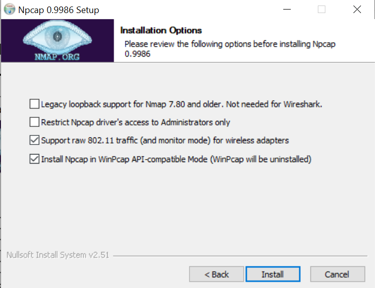
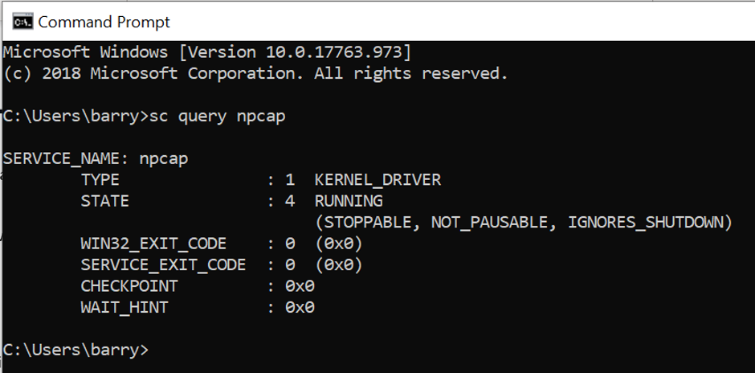

Installing NPCap Service
In this section, we learn how to install the NPCap Service.
Preamble
The NPCap Service is required for the NPCap SDK to work. Since packet capture is such a core element to a computer and requires interaction with your computer’s hardware, the NPCap Service will install itself within your System 32 folder. The NPCap Service is a kernel driver. The kernel is the core of the operating system and a driver is a bit of code that runs in the kernel to talk to a hardware device. The System 32 folder is one of the most important folders on your computer as it stores core files relating to your operating system, so naturally any change to this folder will alert your OS to warn you against allowing the installer to run/complete. Do not be alarmed by these warnings, and simply ignore them in this case.
Installing
To install the service, first go to the Nmap website and to the NPCap section here. Scroll down until you see the installer, highlighted in the below image.

Click on the NPCap installer link to begin downloading the installer. Once downloaded, run the installer. If you see any warning popups, please ignore them.
You will get to a point in the installer where you are faced with this screen.
Depending upon whether you are planning on using NPCap on just wired or wireless networks, enable the penultimate checkbox. If you are using a wireless, please check your adapter against NPCap’s supported adapters here. The adapter needs to support “Capture Works”. Again, any popups that appear please ignore them. The installation should now be complete however we should check that NPCap has installed successfully.We can check to see if the NPCap Service has been installed by running a couple of commands in Command Prompt/Terminal.
We need to be an administrator to run these commands. To open the terminal as an administrator (for Windows 10), navigate to the terminal, right clicking and selecting “Run as Administrator” as seen below.

Once opened, we can now execute some commands.
To obtain the status of the service we have downloaded we can execute this command:
sc query npcap
The command “sc query” Obtains and displays information about the specified service, driver, type of service, or type of driver. In this case the service NPCap. The output should look something like this:
The important thing is that the service is in a STATE of RUNNING. You can see that the service is of a type KERNAL_DRIVER. Congratulations you have installed the NPCap service.
Another tutorial for this step can be found here.
In the next section we will install the NPCap SDK.